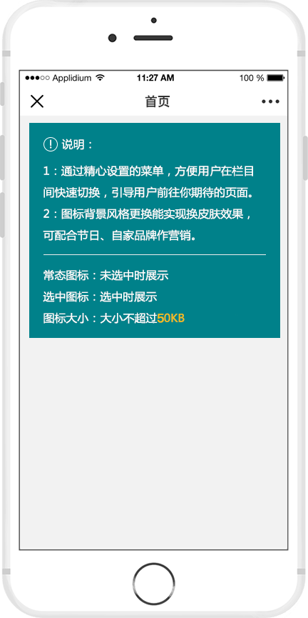

菜单背景:
*建议图片尺寸 750*98像素，大小不超过100KB
| 序号 | 常态图标 | 选中图标 | 跳转链接 | 操作 |
|---|---|---|---|---|
| 1 |
删除 上移一层 下移一层 |
|||
| 2 |

修改 |
删除 上移一层 下移一层 |
||
| 3 |
删除 上移一层 下移一层 |
|||
| 4 |
删除 上移一层 下移一层 |
|||
| 添加菜单栏*可设置0~6个菜单栏 | 恢复默认配置 保存 | |||